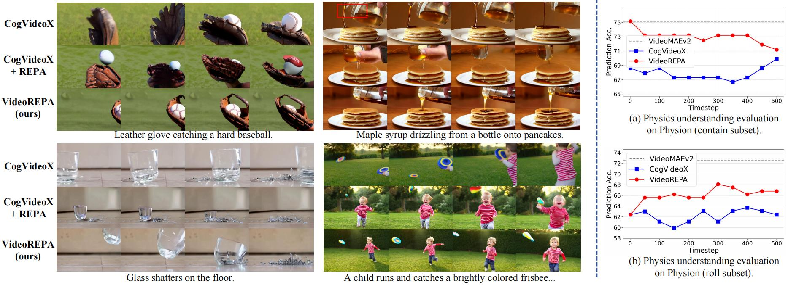

Learning Physics for Video Generation through Relational Alignment with Foundation Models
We propose a novel framework called VideoREPA that distills physics understanding capability from video understanding foundation models into T2V models by aligning token-level relations, enabling more physics-plausible video generation. Our contributions can be summarized as follows:
🔍 Physics Understanding Gap
We identify an essential gap in physics understanding between self-supervised VFMs and T2V models, proposing the first method to bridge video understanding models and T2V models.
💡 Token Relation Distillation
We introduce VideoREPA, utilizing Token Relation Distillation loss to effectively distill physics knowledge from VFMs through token-relational alignment.
This closes the physics understanding gap and enables more physics-plausible generation.
🌟 First Method that Successfully Applying REPA into Video Generation
Our TRD loss overcomes key limitations of directly applying REPA to video generation, particularly for finetuning pre-trained models (compared to from-scratch training in existing REPA methods) and capturing essential temporal dynamics.
1Dept. of CSE & School of AI & MoE Key Lab of AI, Shanghai Jiao Tong University,2Shanghai Jiao Tong University,3NetMind.AI,4The Chinese University of Hong Kong
†Interns at Shanghai AI Laboratory.

Figure 1:Left: Visual comparison showing CogVideoX baseline, CogVideoX+REPA, and our VideoREPA results. Right: Physics understanding evaluation on Object Contact Prediction task demonstrating the gap between VideoMAEv2 and CogVideoX, which VideoREPA successfully bridges. The chance level accuracy is 50%.
Videos in Fig.1:
CogVideoX vs.
CogVideoX+REPA loss vs.
VideoREPA
Detail: On a bright, sunlit baseball field, a leather glove, worn and well-used, hovers in the air. The camera follows the fast-moving trajectory of a hard-thrown baseball as it speeds toward the glove. With a sharp snap, the glove closes around the ball, creating a satisfying thud as the impact is absorbed. The glove holds the ball securely, its leather creasing slightly as the baseball settles in, the motion fluid and precise in the excitement of the catch.
Detail: On a cozy wooden breakfast table bathed in warm morning light, a stack of fluffy golden pancakes rests on a white ceramic plate. Above them, a hand tilts a glass bottle filled with thick, amber-colored maple syrup. The syrup flows slowly from the spout in a smooth, glossy stream, cascading over the top pancake and spreading across the surface. The camera captures the rich liquid soaking into the pancakes’ soft texture, forming shiny pools in the ridges and around the edges. A pat of butter begins to melt on top, adding a soft glisten to the scene.
Detail: On a tiled floor, a clear glass tumbler slips from a countertop and crashes downward. Upon hitting the hard surface, it breaks into sharp fragments with a loud, high-pitched shatter. Tiny pieces scatter in all directions, some bouncing slightly before coming to rest.
Detail: A vibrant outdoor scene unfolds, showcasing a young child clad in a striking red and white striped shirt, running with unbridled enthusiasm across a lush green lawn. The camera, held in a steady, medium shot, captures the child's animated expressions as they dash towards a colorful frisbee, its bright yellow and blue design contrasting beautifully against the verdant backdrop. The frisbee, initially tossed from the left, arcs gracefully through the air, drawing the child's eager gaze. As the child's arms stretch wide, they deftly catch the frisbee, their momentum halting abruptly, feet planted firmly on the ground. The scene is bathed in warm, golden-hour light, enhancing the vivid colors and creating a serene atmosphere, while the gentle rustle of leaves whispers in the background, encapsulating the joy of a playful afternoon.
Abstract
Recent advancements in text-to-video (T2V) diffusion models have enabled high-fidelity and realistic video synthesis. However, current T2V models often struggle to generate physically plausible content due to their limited inherent ability to accurately understand physics.
We found that while the representations within T2V models possess some capacity for physics understanding, they lag significantly behind those from recent video self-supervised learning methods.
To this end, we propose a novel framework called VideoREPA, which distills physics understanding capability from video understanding foundation models into T2V models by aligning token-level relations. This closes the physics understanding gap and enables more physics-plausible generation. Specifically, we introduce the Token Relation Distillation (TRD) loss, leveraging spatio-temporal alignment to provide soft guidance suitable for finetuning powerful pre-trained T2V models—a critical departure from prior representation alignment (REPA) methods. To our knowledge, VideoREPA is the first REPA method designed for finetuning T2V models and specifically for injecting physical knowledge. Empirical evaluations show that VideoREPA substantially enhances the physics commonsense of baseline method, CogVideoX, achieving significant improvement on relevant benchmarks and demonstrating a strong capacity for generating videos consistent with intuitive physics.
Figure 2: Overview of VideoREPA framework. Our VideoREPA enhances physics in T2V models by distilling physics knowledge from pre-trained SSL video encoders. We apply Token Relation Distillation (TRD) loss to align pairwise token similarities between video SSL representations and intermediate features in diffusion transformer blocks. Within each representation, tokens form spatial relations with other tokens in the same latent frame and temporal relations with tokens in other latent frames.
Qualitative Comparison:
HunyuanVideo vs.
CogVideoX vs.
VideoREPA
Detail: In a cozy kitchen, a clear glass jar of golden honey is held above a shallow bowl of warm milk. As the honey is slowly poured, it drips in thick, viscous strands, landing gently on the surface of the milk. The honey, initially distinct with its amber hue, begins to diffuse and swirl into the milk, creating a mesmerizing pattern. The camera focuses on the swirling motion, capturing the gradual blending of the honey as it dissolves into the warm liquid, leaving behind a soft, creamy texture. The steam rises from the milk, enhancing the warmth and calmness of the moment.
Detail: In a serene, sunlit landscape, a cylindrical metal container, its surface gleaming with a metallic sheen, rolls down a gently sloping hill covered in lush, vibrant green grass. The camera captures the container's dynamic descent, its circular form glinting in the golden-hour light, as it gracefully navigates the uneven terrain. The background features a tranquil forest, where tall, slender trees sway gently, their leaves whispering in the breeze, while a small, delicate bush stands sentinel at the base of the hill. The scene is bathed in a warm, golden hue, enhancing the container's metallic reflections and the rich textures of the grass. As the container comes to a halt near the bush, the camera remains static, allowing the viewer to appreciate the harmonious interplay of nature and man-made object, creating a poignant moment of stillness amidst the gentle motion.
Detail: On a smooth wooden desk, a solitary pencil slowly rolls in circles, its wooden surface catching the light. The camera focuses on the pencil as it moves gently, its eraser end tapping against the desk, causing it to shift slightly in random directions. The pencil continues its quiet movement, rolling aimlessly as the desk remains still, the sound of its soft tapping filling the space.
Detail: In a sun-drenched industrial yard, a towering yellow crane, its arm adorned with a sturdy hook, gracefully lifts a pallet of neatly stacked red bricks. The camera captures the scene from a static position, allowing the viewer to appreciate the meticulous choreography of the crane's movements as it delicately raises the heavy load. The bricks, arranged in a precise grid, are bathed in the warm glow of the golden-hour light, casting gentle shadows that dance across the surface. The crane's arm, a testament to its strength, glides smoothly upward, revealing the intricate details of the pallet's construction. As the camera remains fixed, the crane's arm ascends steadily, showcasing the harmonious interplay between the machine and its load, while the surrounding industrial landscape, with its scattered debris and weathered surfaces, adds depth to the scene, evoking a sense of industriousness and order.
Detail: In a sun-drenched outdoor setting, two individuals clad in casual attire—one in a vibrant red shirt and the other in a light blue top—stand poised on a lush green lawn, framed by a backdrop of verdant trees and a serene blue sky. The camera captures a static, close-up view, focusing on their hands as they grasp a long, black bungee cord, its elastic nature stretching taut between them. The man in red, with a determined expression, extends his arms to the fullest, while his companion mirrors his effort, their synchronized movements creating a dynamic tension. The cord, glistening under the sunlight, stretches to its maximum length, revealing the strength and flexibility of the material. As they maintain this intense pose, the scene radiates a sense of camaraderie and shared purpose, inviting viewers to appreciate the artistry of human interaction and the beauty of nature.
Detail: In a sun-drenched urban landscape, a dynamic soccer match unfolds, captured with cinematic precision. The camera, positioned at a low angle, frames a player clad in a vibrant blue jersey, their muscular legs poised for action. As they kick the ball with explosive force, the camera remains static, allowing the viewer to fully absorb the power and precision of the strike. The ball soars through the air, its trajectory marked by a graceful arc, before colliding with a sturdy lamp post, its metal surface glinting in the sunlight. The impact sends the ball ricocheting at a sharp angle, its path illuminated by the golden-hour glow. The surrounding urban backdrop, with its towering buildings and lush greenery, enhances the scene's energy, while the player's determined expression underscores the intensity of the moment, encapsulating the thrill of competition in a single, breathtaking shot.
CogVideoX vs.
VideoREPA
Detail: On a tiled floor, a clear glass tumbler slips from a countertop and crashes downward. Upon hitting the hard surface, it breaks into sharp fragments with a loud, high-pitched shatter. Tiny pieces scatter in all directions, some bouncing slightly before coming to rest.
Detail: On a tiled floor, a clear glass tumbler slips from a countertop and crashes downward. Upon hitting the hard surface, it breaks into sharp fragments with a loud, high-pitched shatter. Tiny pieces scatter in all directions, some bouncing slightly before coming to rest.
Detail: In a laundry room, a wrinkled cotton shirt is laid out on an ironing board. A hot steam iron glides smoothly across the fabric, pressing down firmly. As it passes over the folds, the wrinkles vanish, leaving behind a flat, smooth surface. Steam rises in gentle wisps, and the fabric takes on a crisp, refreshed look.
Detail: On the grassy edge of a wide, gently flowing river, a man stands with his arm pulled back, gripping a smooth stone. He swings his arm forward in a swift, controlled motion and releases the stone into the air. The camera follows its flight as it arcs across the river, skipping once or twice on the water's surface before finally sinking. Ripples expand outward, and the man watches calmly, framed by tall trees and the distant opposite bank.
Detail: The video shows a clear glass bottle, tightly corked with a rolled piece of paper visible inside, bobbing gently on the surface of a vast, deep blue open sea under a partly cloudy sky. The bottle drifts slowly but steadily with the ocean currents, emphasizing its solitary journey across the expansive waters.
Detail: In a dimly lit industrial space, a solitary figure clad in a dark jacket and a white cap bends over a large, rectangular puddle of water on a textured concrete floor. The scene is bathed in a soft, diffused light that casts gentle shadows, enhancing the stark contrast between the wet surface and the dry surroundings. As the camera remains static, the individual meticulously glides a mop across the floor, the water retreating in a mesmerizing dance of absorption. Each stroke reveals the intricate patterns of the concrete, while the water's surface shimmers with reflections of the overhead lights, creating a dynamic interplay of light and shadow. The atmosphere is charged with a sense of purpose, as the mop's rhythmic movements evoke a profound focus, encapsulating the essence of diligent labor in this minimalist setting.
Detail: In a vibrant, dimly lit bar, a man in a dark shirt and a striking red cap stands confidently, his hand poised around a large, frosted beer stein. The camera captures him in a close-up, his expression focused as he tilts the stein, allowing the golden liquid to cascade into a small, clear shot glass positioned on the bar counter. The scene is illuminated by warm, ambient lighting that casts a soft glow, enhancing the rich textures of the beer and the polished surface of the bar. As the stein tips, the beer flows gracefully, creating a mesmerizing cascade that fills the shot glass, while the man's steady hand ensures a smooth pour. The background remains softly blurred, drawing the viewer's attention to the intricate details of the beer's movement and the man's deliberate actions, culminating in a satisfying conclusion as the shot glass is filled to the brim.
Detail: In a serene, sunlit river scene, a solitary rower glides through the tranquil waters, their sleek single scull boat cutting through the glassy surface. The camera captures a static, wide-angle view, showcasing the rower's focused demeanor as they skillfully maneuver the oar, creating a rhythmic, rippling wake that dances behind the boat. The riverbank, adorned with lush greenery, frames the scene, while the clear blue sky above reflects on the water, enhancing the peaceful ambiance. The rower's fluid movements, accentuated by the subtle play of light, evoke a sense of harmony with nature, as they navigate the calm waters with precision and grace, embodying the essence of solitude and tranquility in this idyllic setting.
Detail: The video displays a hand holding a transparent spray bottle containing a blue cleaning fluid. The nozzle is directed towards a smudged white kitchen countertop. The trigger is pulled, releasing a fine, wide mist of the blue liquid which visibly settles onto the countertop surface, wetting it evenly in preparation for cleaning.
Detail: In a serene, minimalist setting, a sleek, metallic object resembling a globe rests on a flat surface, its surface adorned with intricate geographical features and vibrant colors that depict various countries. The camera, positioned at a static angle, captures the globe's upper hemisphere in exquisite detail, showcasing the delicate balance of land and sea. As the scene unfolds, a pair of hands, clad in a light-colored glove, gracefully approaches the globe, gently pressing a finger onto its surface. This subtle interaction triggers a smooth rotation, revealing the globe's underside, where a striking red and white pattern emerges, hinting at a unique design. The lighting is soft and even, enhancing the globe's reflective qualities, while the background remains intentionally blurred, drawing the viewer's focus to the globe's mesmerizing rotation. This cinematic moment encapsulates the beauty of exploration and discovery, inviting the audience to engage with the world in a captivating visual narrative.
Detail: In this captivating sports video, the camera captures a dynamic sequence of an athlete executing a series of dips on parallel bars, showcasing their strength and agility. The scene opens with a static side view, revealing the athlete's powerful upper body as they grip the bars, their arms fully extended, poised for the first dip. As they begin their descent, the camera remains steady, allowing viewers to appreciate the controlled motion of their body, which gracefully lowers and rises in a rhythmic pattern. The background is softly blurred, drawing focus to the athlete's muscular arms and the intense concentration on their face, illuminated by the warm, golden-hour light that casts a gentle glow across the scene. This cinematic approach highlights the athlete's dedication and skill, immersing the audience in the raw power and precision of their performance.
Detail: In a softly lit space, a sleek perfume bottle is held delicately in hand. With a press of the nozzle, a fine mist bursts into the air, dispersing in a cloud of tiny, glistening droplets. The scent lingers invisibly, while the mist catches the light before fading.
Detail: In a softly lit bathroom, a woman with shoulder-length, fine hair stands before a large, rectangular mirror, her reflection capturing the essence of her serene morning routine. The camera, positioned at a slight angle, frames her upper body, showcasing her casual attire—a light blue shirt and a delicate necklace that glimmers subtly in the warm, diffused light. As she gently lifts her hair with her left hand, her right hand expertly wields a sleek, white hairdryer, its nozzle directed towards her hair. The dryer, set to a low heat setting, emits a gentle, rhythmic sound, creating a soothing ambiance. With a focused expression, she carefully dries her hair, ensuring each section is evenly treated, while the mirror reflects her concentration and the soft, diffused light that bathes the scene in a tranquil glow. The static camera captures this intimate moment, highlighting the meticulous care she takes in her grooming ritual.
Detail: In a utility room, a bottle of liquid detergent is tipped over a large plastic bucket filled with water. A ribbon of thick, colorful soap pours from the bottle’s opening and mixes into the water below. Bubbles begin to form on the surface as the detergent spreads, creating swirling patterns of foam and shimmer.
Detail: In a tiled bathroom, a wet soap bar rests precariously on a sloped ceramic dish. As water runs beneath it, the slick bar shifts and slowly slides off the edge. It lands with a soft thud on the sink or counter, leaving a faint trail of bubbles behind.
More Videos Generated by VideoREPA
Background
Recent advancements in text-to-video (T2V) diffusion models have enabled high-fidelity and realistic video synthesis. However, current T2V models often struggle to generate physically plausible content due to their limited inherent ability to accurately understand physics. While representations within T2V models possess some capacity for physics understanding, they lag significantly behind those from recent video self-supervised learning methods. This gap in physics comprehension motivates the need for novel approaches to enhance the physical realism of generated videos through knowledge transfer from video understanding foundation models.
Contribution
We propose VideoREPA, a novel framework that distills physics understanding capability from video understanding foundation models into T2V models by aligning token-level relations. Our contributions can be summarized as follows:
1. Physics Understanding Gap Identification: We identify and quantify the significant physics understanding gap between self-supervised video foundation models and text-to-video diffusion models.
2. Token Relation Distillation (TRD) Loss: We introduce a novel TRD loss that effectively distills physics knowledge through spatio-temporal token relation alignment, overcoming key limitations of direct REPA application.
3. VideoREPA Framework: We present the first representation alignment method specifically designed for finetuning video diffusion models and injecting physical knowledge into T2V generation.
Validation
Our method significantly improves physics commonsense in video generation. VideoREPA achieves a state-of-the-art Physical Commonsense (PC) score of 40.1 on VideoPhy, representing a 24.1% improvement over the CogVideoX baseline.
Experiment Results
We evaluate VideoREPA on two comprehensive physics benchmarks: VideoPhy and VideoPhy2. Our method demonstrates significant improvements in both Semantic Adherence (SA) and Physical Commonsense (PC) scores compared to baseline models. Results show VideoREPA achieves state-of-the-art performance across three interaction types. Compared to its baseline CogVideoX, VideoREPA-5B improves the Physical Commonsense (PC) score by 24.1% overall (specifically, 42.9% for Solid-Solid, 16.7% for Solid-Fluid, and 20.6% for Fluid-Fluid). Our method also surpasses WISA, a technique designed for enhancing physics commonsense in video generation. Notably, while WISA shows efficacy when trained on the physics-explicit dataset WISA-32K, it struggles to generalize to open-domain datasets like Koala-36M. In contrast, VideoREPA, trained on an open-domain dataset, demonstrates clear improvements over WISA on such data (e.g., PC score of 40.1 vs. WISA's 33 on Koala-36M).
Table 1: Results on VideoPhy benchmark. † denotes results reported from WISA and * denotes detailed prompt input. Semantic Adherence (SA) measures video-text alignment and fidelity. Importantly, Physical Commonsense (PC) measures whether generated videos follow physics laws in the real-world.
Methods
Solid-Solid
Solid-Fluid
Fluid-Fluid
Overall
SA
PC
SA
PC
SA
PC
SA
PC
VideoCrafter2
50.4
32.2
50.7
27.4
48.1
29.1
50.3
29.7
DreamMachine
55.1
21.7
59.6
23.3
58.2
18.2
57.5
21.8
LaVIE
40.8
18.3
48.6
37.0
69.1
50.9
48.7
31.5
Cosmos-Diffusion-7B†
-
-
-
-
-
-
57
18
HunyuanVideo*
55.2
16.1
67.1
30.1
54.5
54.5
60.2
28.2
PhyT2V†
-
-
-
-
-
-
61
37
WISA (Koala dataset)†
-
-
-
-
-
-
62
33
WISA (WISA dataset)†
-
-
-
-
-
-
67
38
CogVideoX-2B
37.8
12.6
67.1
30.1
45.5
50.9
51.6
26.2
CogVideoX-2B*
49.6
13.3
71.2
28.1
60.0
50.9
60.5
25.6
VideoREPA-2B*
52.4
18.2
77.4
32.2
60.0
52.7
64.2
29.7
CogVideoX-5B†
-
-
-
-
-
-
60
33
CogVideoX-5B
53.1
18.2
75.3
32.9
56.4
61.8
63.1
31.4
CogVideoX-5B*
62.9
19.6
76.0
33.6
72.7
61.8
70.0
32.3
VideoREPA-5B*
58.0
28.0
82.9
39.0
80.0
74.5
72.1
40.1
We further assess physical commonsense on VideoPhy2, an action-centric benchmark featuring complex human-object interactions. Following its protocol, Semantic Adherence (SA) and Physical Commonsense (PC) scores are the proportion of videos rated $\geq 4$ for each metric. Our VideoREPA (2B) demonstrates a significant improvement over the baseline by 4.57 points, further validating the effectiveness of our proposed method.
Conclusion
In this paper, we presented VideoREPA, a framework designed to transfer physics knowledge from Video Foundation Models (VFMs) to text-to-video diffusion models (VDMs) via token-level relation distillation. We first identified a significant physics understanding performance gap between VFMs and VDMs. Subsequently, motivated by the principle that enhanced understanding facilitates higher-quality generation, we proposed the Token Relation Distillation (TRD) loss to distill physics understanding capability from pre-trained VFMs to VDMs, thereby achieving more physically plausible video generation. Extensive experiments demonstrate that VideoREPA achieves state-of-the-art generation results, exhibiting great physical commonsense in generated videos.
BibTeX
@article{videorepa,
title={VideoREPA: Learning Physics for Video Generation through Relational Alignment with Foundation Models},
author={Zhang, Xiangdong and Liao, Jiaqi and Zhang, Shaofeng and Meng, Fanqing and Wan, Xiangpeng and Yan, Junchi and Cheng, Yu},
journal={arXiv preprint},
year={2024}
}